Konectus: de CRM de WhatsApp
a plataforma modular
Una sola plataforma que cualquier empresa configura con módulos, con IA opcional. Una empresa global desde el día 1: lanzamos desde México, pero vendemos a cualquier país de América y del mundo, sin enfocarnos en uno solo. Después crecemos con más integraciones.
01
Hoy
02
Por qué cambiar
03
Módulos
04
Escalabilidad
05
Mercado global
06
Plan y decisiones
Lo que proponemos, en 5 frases
Lo que necesitamos decidir juntos está al final: el foco del lanzamiento, desde dónde operamos y cobramos, el orden de las integraciones y las metas de 90 días.
Lo que somos hoy
Una base técnica sólida, presentada como un CRM de WhatsApp más.
Lo que ya existe en el producto
- Bandeja unificada para agentes
- Contactos, embudo Kanban y tableros por departamento
- Tickets
- Bots, agentes IA y aprobaciones
- Facturación y créditos de IA
- WhatsApp: API oficial y conexión por QR
- Instagram y Messenger
- Telegram
- Mensajería en tiempo real para agentes
- Un servicio por canal + despachador de mensajes
- Bus de eventos entre servicios
- Motor de IA aparte, con documentos y flujos
- Multi-empresa con roles
- Interfaz ya en español, inglés y portugués
La tecnología no es el problema. El problema es cómo nos posicionamos y qué resolvemos que otros no.
Lo que nos impulsa y lo que nos frena
- Canales propios, incluida la API oficial de WhatsApp
- Si la IA falla, los mensajes siguen llegando a los agentes: son dos rutas separadas
- Motor de IA propio, no un "plugin"
- Cobro en USD con Stripe y créditos de IA ya integrados
- Base multi-idioma lista (es, en, pt)
- Primeras integraciones: Gmail, Google Sheets, Slack, Zapier, webhooks y API pública
- Nos perciben igual que la competencia
- Cada negocio está atado a una conversación: no sirve para cobranza ni para importar datos
- Tickets sin configuración ni tiempos de respuesta
- Faltan integraciones clave para un mercado global: SMS, Shopify, HubSpot y calendarios
- Demasiados frentes abiertos para un equipo pequeño
Por qué cambiar
Ya hay muchos CRM de WhatsApp en el mundo. Si somos uno más, competimos solo por precio.
Con quién competimos a nivel global
| Competidor | En qué es fuerte | Lo que no cubre bien (nuestra lectura) |
|---|---|---|
| respond.io | Muchos canales, volumen alto, fuerte en Asia y LATAM | Precio y complejidad para equipos pequeños; cobra extras por contactos |
| Kommo | Embudo de ventas sobre mensajería, bots, IA en planes altos | El precio sube por plan y extras; soporte y operación |
| Wati / Trengo | WhatsApp oficial simple para pymes | Poco CRM y pocos procesos más allá del chat |
| Intercom / Zendesk | Soporte con IA para empresas medianas y grandes | Caros; pensados para chat web y correo, no para WhatsApp |
| HubSpot | CRM completo y conocido | Caro para pymes; WhatsApp integrado a medias |
Conclusión: todos venden "bandeja + bot + embudo" o son caros y complejos. Casi nadie ofrece una plataforma modular, con precio claro, IA opcional y procesos completos para pymes de cualquier país.
Lo que se copia en un fin de semana y lo que no
- Bandeja unificada
- Bot de preguntas frecuentes
- Embudo simple
- Envíos masivos
Hoy salen clones hechos con IA cada semana.
- Reglas legales por país (cobranza, datos personales, quejas)
- Conciliación de pagos y evidencia
- Traspaso IA → humano con contexto
- WhatsApp oficial estable a escala
- Módulos y plantillas por industria
- Precio claro, sin costos escondidos
- Configurar sin contratar programador
- Que no les bloqueen el número
- Que la IA no haga repetir todo al cliente
Nuestra ventaja no es "tener IA": es ser la plataforma donde se resuelve la operación completa, con reglas, plazos y dinero.
La propuesta: núcleo + módulos
Un solo producto. Cada empresa activa lo que necesita, como apps en un celular.
Cuatro capas, un solo código
El núcleo es lo que tiene cualquier cliente. Los módulos agregan procesos. Las plantillas solo preconfiguran módulos para un giro. El paquete de país adapta todo a las leyes y costumbres locales.
¿Qué es un módulo, técnicamente?
Un módulo no es código aparte: es un paquete de configuración que el núcleo sabe leer. Declara estas 8 piezas:
1 · Tipos de registro
Ej. "Cuenta por cobrar" con sus etapas: al corriente → vencida → promesa → pagada.
2 · Campos
Monto, días de atraso, fecha de promesa. Se importan de Excel.
3 · Reglas
"Si vence en 3 días, enviar recordatorio entre 8:00 y 21:00."
4 · Pantallas
Entradas de menú, paneles y vistas que aparecen al activarlo.
5 · Acciones en el chat
Botones dentro de la conversación: "Registrar promesa", "Enviar enlace de pago".
6 · Agentes de IA
Instrucciones, documentos y límites del agente. Opcional.
7 · Permisos y reportes
Quién ve qué y qué indicadores mide.
8 · Precio
Lo que cuesta al mes, visible antes de activarlo.
Por qué importa: como todos los módulos usan el mismo motor (registros, reglas, chat, IA), crear uno nuevo toma semanas, no meses, y mejorar el núcleo mejora todos los módulos a la vez.
Ejemplo de cómo funciona un módulo: Cobranza
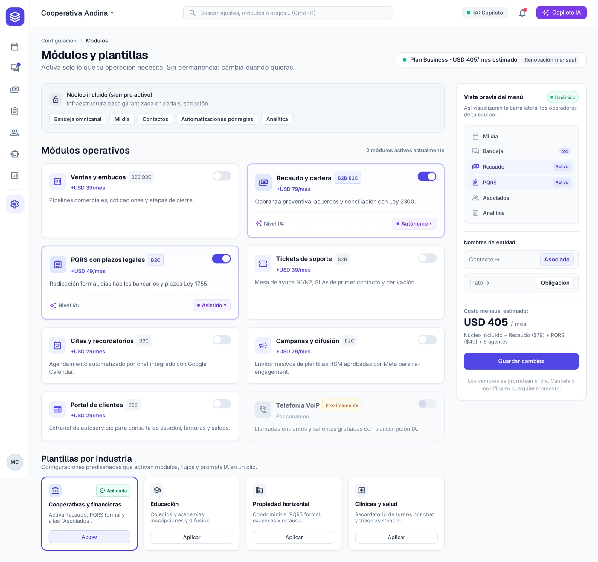
1Activa el módulo. Aparece "Cobranza" en el menú y un asistente de primer uso.
2Importa su cartera desde Excel. La IA sugiere qué columna es cada campo (o se hace a mano).
3El paquete del país aplica las reglas: horarios de contacto permitidos, aviso de privacidad y registro de cada gestión. Cada país trae las suyas.
4Se envían recordatorios por WhatsApp. Cuando el cliente responde, el agente (o la IA) registra una promesa o envía el enlace de pago desde el chat.
5El panel muestra cuánto se recuperó, las promesas pendientes y el cumplimiento.
Catálogo de módulos y dónde estamos
| Módulo | Qué resuelve | Para quién | Estado |
|---|---|---|---|
| Ventas | Embudo, seguimiento, cotizaciones | Todos | Existe lanzamiento global |
| Soporte y tickets | Casos con prioridad y tiempos de respuesta | Todos | Adaptar lanzamiento global |
| Bots e IA | Respuestas, flujos, agentes con aprobación | Todos | Existe lanzamiento global |
| Campañas | Envíos con plantillas oficiales de WhatsApp | Comercio, servicios | Adaptar lanzamiento global |
| Citas | Agenda por chat y recordatorios | Clínicas, servicios | Nuevo fase 2 (necesita calendarios) |
| Cobranza | Cartera, recordatorios, promesas, pagos, evidencia | Financieras, cooperativas, colegios | Nuevo fase 3, con paquete de país |
| Quejas y aclaraciones | Casos con plazo legal y expediente | Empresas reguladas | Nuevo fase 3, con paquete de país |
| Multi-cliente y VoIP | Varias marcas por cuenta; llamadas con transcripción | Agencias, BPO | Nuevo fase 3 |
El estado viene de revisar el repositorio actual. Lanzamos con los módulos que sirven en cualquier país. Los que dependen de leyes locales (cobranza, quejas) llegan después, país por país. Antes hay que construir el "registro genérico con etapas" (hoy cada negocio depende de una conversación).
El mismo producto, tres empresas distintas
- Módulos: Ventas + Soporte
- IA: Asistido (sugiere respuestas)
- Ve: una sola cola en "Mi día", sin departamentos
- Compra: sola, en línea, en 15 minutos
- Módulos: Soporte + Citas + Campañas
- IA: Copiloto (agenda sola y pide aprobación en lo sensible)
- Ve: departamentos (recepción, ventas) y supervisores
- Compra: sola, o con ayuda de un socio
- Módulos: Ventas + Campañas + Multi-cliente
- IA: Autónomo en preguntas frecuentes
- Ve: un espacio por cliente, con su marca
- Compra: como socio revendedor
Ninguna empresa ve pantallas que no usa. El menú se arma con los módulos activos, y la cantidad de personas define si aparecen departamentos, supervisores y permisos avanzados.
IA nativa, pero opcional en cada módulo
Solo reglas y plantillas. Costo de IA: cero.
La IA sugiere y la persona envía.
La IA hace lo rutinario y pide aprobación en lo sensible.
La IA opera de punta a punta y la persona supervisa.
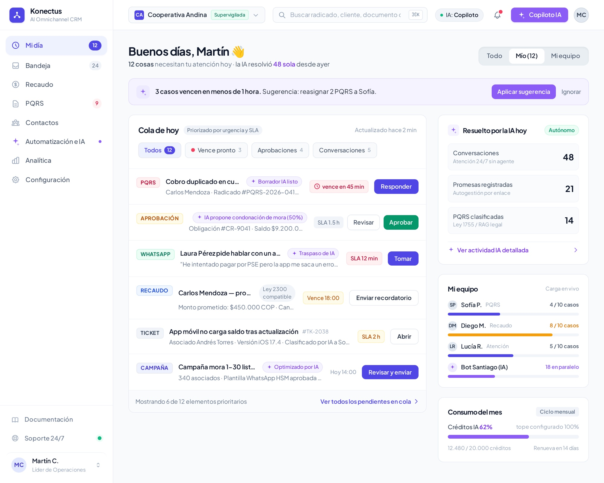
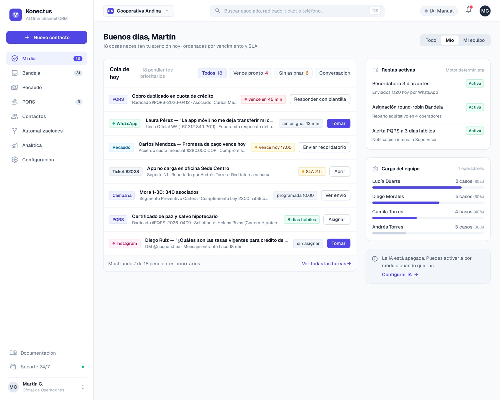
Escalabilidad
Escalar en tres sentidos: producto, tecnología y negocio.
Escalar el producto: crecer sin multiplicar el trabajo
- Un desarrollo a la medida por cliente grande
- Una versión distinta por país
- Cada nicho nuevo = meses de programación
- El equipo termina manteniendo muchos productos
- Cliente nuevo → elige plantilla, sin programar
- Nicho nuevo → un módulo nuevo sobre el mismo motor
- País nuevo → un paquete de país (idioma, pagos, leyes)
- Una mejora al núcleo llega a todos los clientes
solo código para todos los clientes, giros y países
meta para que un cliente pequeño envíe su primer mensaje solo
meta para activar un módulo, usuario o canal
Escalar la tecnología: lo que ya tenemos y lo que falta
- Servicios independientes por canal, mensajes, tiempo real, archivos e IA: cada uno crece por separado
- Bus de eventos: los servicios se comunican sin depender uno del otro
- IA separada del flujo crítico: si cae, la atención sigue
- Multi-empresa: cada cliente aislado, con roles
- Trazabilidad de cada mensaje entre servicios y monitoreo
- Idiomas en la interfaz (es, en, pt) con pruebas de que no falten textos
- Registro genérico con etapas (base de todos los módulos)
- Motor de módulos: activar y desactivar por empresa y menú dinámico
- Paquete de país: moneda, impuestos, festivos y reglas como configuración
- Más integraciones: SMS (para países donde WhatsApp no domina), Shopify, HubSpot, calendarios
- Privacidad global: leyes de datos de cada región (México, Brasil con LGPD, Europa con GDPR) desde el diseño
- Pruebas de carga y metas de capacidad: todavía no las tenemos medidas
Escalar el negocio: que crecer no dependa de contratar vendedores
Autoservicio
Las pymes prueban, configuran y pagan solas. Sin vendedor.
Módulos como upsell
El cliente empieza con el núcleo y paga más cuando activa módulos: el ingreso crece con él.
IA por consumo
Créditos con tope de gasto visible. Ingreso extra sin sorpresas para el cliente.
Socios revendedores
Agencias y consultores venden Konectus con su marca y lo implementan.
| Puerta de entrada | Cliente | Cómo se vende | Precio de referencia |
|---|---|---|---|
| 1 · Autoservicio global | Pymes B2C y B2B de cualquier país | Prueba gratis de 14 días, sin tarjeta | USD 20–60 por usuario al mes, con Stripe (ya integrado) |
| 2 · Nichos (después) | Financieras, cooperativas, colegios, BPO | Venta consultiva y piloto medido | USD 500–5,000 por cuenta al mes, o por resultado |
Los precios son hipótesis a validar con los pilotos, no resultado de un estudio de mercado.
Mercado: global desde el día 1
Una empresa global desde el inicio: lanzamos desde México, pero el producto, el precio y el sitio son para cualquier país. No apostamos por un solo mercado.
Por qué global desde el inicio: México y Latinoamérica
unidades económicas, casi todas micro, pequeñas y medianas.
de los usuarios de mensajería usa WhatsApp. Es el canal número 1.
de las empresas son mipymes, y generan el 61% del empleo formal.
usa WhatsApp en México, Argentina, Colombia y Chile. Es la app de mensajería dominante en la región.
México es la base, no el límite: desde aquí opera el equipo y salen los primeros clientes, pero el precio en USD, la prueba gratis y el sitio son iguales para todos.
Latinoamérica sin rehacer nada: el producto ya está en español y portugués, así que una pyme de Colombia, Chile o Brasil puede registrarse y pagar sola desde el primer día.
Si empezamos local, nos quedamos locales: un producto, una marca y unos precios pensados para un solo país cuestan mucho de rehacer después.
A quién le vendemos primero
- En cualquier país de América y del mundo
- Comercio, servicios, clínicas, educación
- Núcleo + Ventas + Soporte + IA opcional
- Compran solas, en su idioma
- E-commerce transfronterizo, turismo, educación en línea, logística
- Atienden a clientes en varios idiomas desde un mismo equipo
- La IA responde en el idioma de cada cliente
- Agencias de marketing y consultores de cualquier país
- Venden e implementan Konectus a sus clientes
- Nos dan distribución sin contratar vendedores
Sin país objetivo: no hacemos campañas ni precios para un país en particular. Medimos de dónde llegan los clientes que pagan y solo ahí invertimos más (contenido, socios, pagos locales). Los mockups actuales están en español con ejemplos de Colombia: hay que tener versión en inglés y portugués para el lanzamiento.
Multi-idioma: cómo funciona
Idioma de la interfaz
Cada usuario elige su idioma. Hoy: inglés, español y portugués, con pruebas automáticas que avisan si falta un texto.
Idioma de la conversación
La IA detecta el idioma del cliente final y responde en él. Las plantillas de WhatsApp se guardan por idioma. Un agente que habla español puede atender a un cliente en inglés.
Paquete de país
Moneda, impuestos, medios de pago locales, reglas legales, días festivos y formatos. Se agrega cuando un país lo justifica.
La clave: lanzamos global con el núcleo y los módulos que sirven en cualquier país. Los módulos que dependen de leyes locales (cobranza, quejas) llegan después, con el paquete de cada país, sin hacer otra versión del producto.
Cómo crecemos: integraciones por olas
| Ola | Integraciones | Para qué |
|---|---|---|
| Lanzamiento Ya existe | WhatsApp oficial, Instagram, Messenger, Telegram · Gmail · Google Sheets · Slack · Zapier · webhooks y API pública · Stripe | Vender en cualquier país desde el día 1 y conectarse con casi cualquier herramienta a través de Zapier |
| Ola 2 3–9 meses | SMS (Twilio) · Shopify y WooCommerce · HubSpot, Salesforce y Pipedrive · Google Calendar y Cal.com · Make y n8n | Llegar a países donde WhatsApp no domina (SMS), al e-commerce y a empresas que ya tienen un CRM. Lanzar el módulo de Citas |
| Ola 3 9–18 meses | VoIP con transcripción · QuickBooks y Xero · pagos locales por país (Mercado Pago, PIX, OXXO) · Microsoft Teams y Outlook | Llamadas, contabilidad y cobro local. Habilita Cobranza y los paquetes de país |
| Ola 4 18+ meses | Mercado de integraciones abierto a terceros · ERPs | Que otros construyan sobre Konectus |
Regla para pasar de ola: que la anterior la pidan clientes que pagan. Propuesta de meta: 50 clientes pagando en al menos 3 países y bajas por debajo del 5% al mes.
Cómo lo vive un cliente
El recorrido desde que conoce Konectus hasta su día a día. Haz clic en cualquier captura para verla completa.
1Ve el precio exacto y crea su cuenta
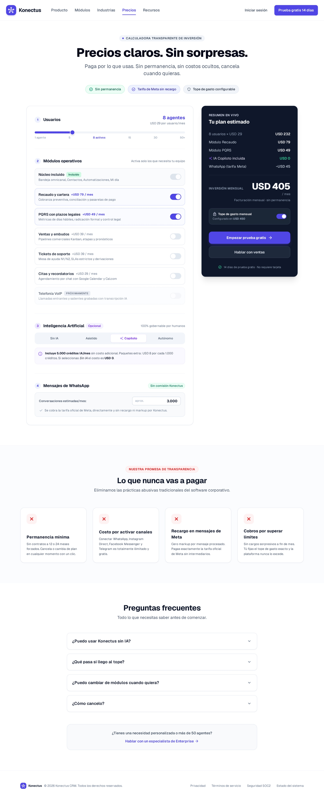
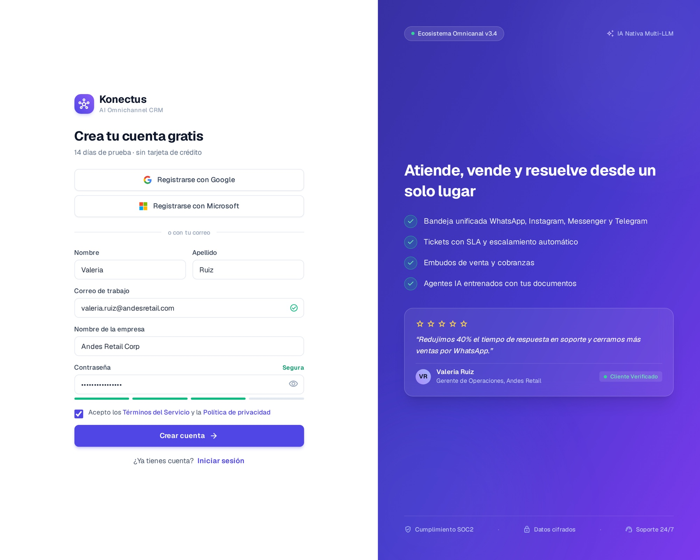
2Elige su plantilla y el tamaño de su equipo


2b…o lo configura conversando con la IA

La empresa describe cómo trabaja: "Somos una cooperativa con 12,000 socios y cobramos cuotas con 5 días de gracia…"
La IA propone plantilla, módulos, reglas y niveles de IA, y muestra una vista previa antes de aplicar.
Todo se puede ajustar a mano o deshacer. Sin IA, el mismo resultado se logra con el asistente de 5 pasos.
3Cada persona abre "Mi día" y atiende sin perder contexto


4Vende y cobra con el módulo de su nicho

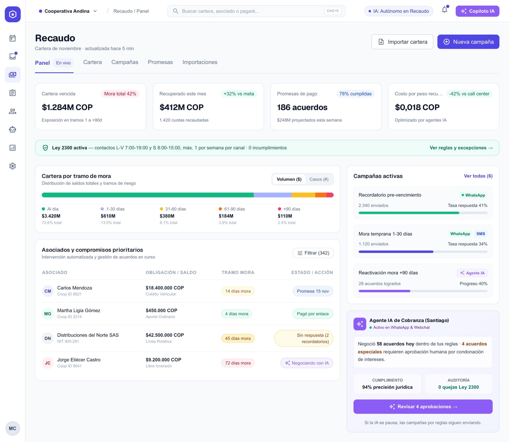
5Controla costos y equipo sin depender de nadie
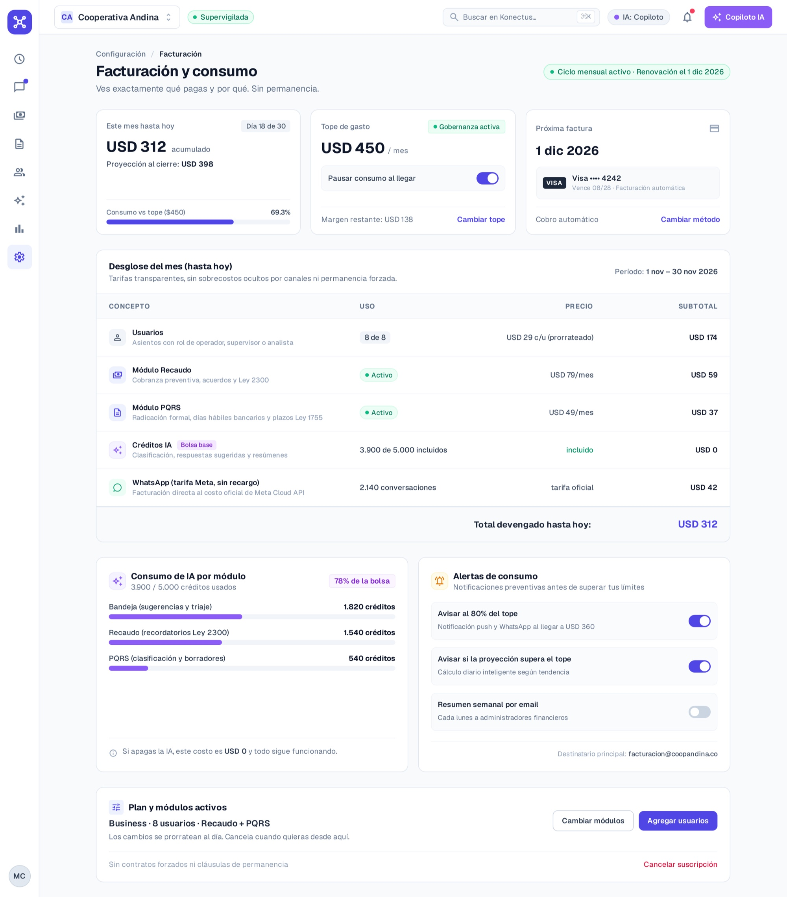

6También desde el celular
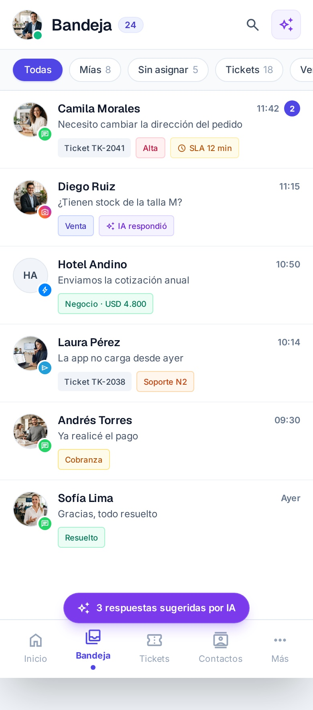

Para quien atiende en movimiento
Las mismas colas y acciones, con la IA ayudando a responder.
Pendientes, traspasos y aprobaciones se resuelven con un toque.
Plan y decisiones
Qué construir primero, qué riesgos vemos y qué tenemos que decidir como socios.
Qué construir, en orden
- Frenar lo que no sume
- Registro genérico con etapas
- Motor de módulos y menú dinámico
- Nuevo diseño y "Mi día", en inglés
- Sitio, precios y prueba gratis globales en USD
- Lanzamiento global en autoservicio (en, es, pt)
- IA que responde en el idioma del cliente
- Tickets configurables
- Programa de agencias y revendedores
- Integraciones de la ola 2: SMS, Shopify, HubSpot, calendarios
- Módulo de Citas
- Campañas
- Integraciones de la ola 3: VoIP, contabilidad, pagos locales
- Primer nicho regulado (Cobranza) en el país con más clientes
- Multi-cliente
clientes pagando en al menos 3 países en 6 meses
de bajas al mes
desde el registro hasta el primer mensaje, sin ayuda
Riesgos y cómo los evitamos
| Riesgo | Cómo lo evitamos |
|---|---|
| Querer abarcar todo a la vez | Un núcleo y módulos globales primero. Los nichos regulados, después. |
| Competir con empresas con más dinero (respond.io, Wati, Kommo) | Diferenciarnos con precio claro, IA opcional, módulos y una experiencia más simple. |
| Conseguir clientes sin vendedores | Contenido en 3 idiomas, plantillas gratis, prueba sin tarjeta y agencias revendedoras. |
| Dar soporte en todos los husos horarios | Centro de ayuda, soporte con IA dentro del producto y escalamiento a humanos. |
| Privacidad en varios países | Leyes de datos de cada región desde el diseño. Paquetes de país revisados por un abogado local. |
| Bloqueos de número y costo de la IA | WhatsApp oficial por defecto. Medidor, tope de gasto y nivel de IA por módulo. |
| Base de datos actual | Construir el registro genérico antes de lanzar módulos nuevos. |
Lo que necesitamos decidir como socios
1 · Foco del lanzamiento
¿Aceptamos un lanzamiento global en autoservicio con el núcleo, Ventas, Soporte e IA opcional?
2 · Qué congelamos
¿Qué frentes actuales pausamos para liberar al equipo?
3 · Empresa y cobro
¿Cobramos en USD a cualquier país desde la empresa en México, o abrimos otra estructura si vamos a levantar capital?
4 · Orden de integraciones
¿Confirmamos la ola 2 (SMS, Shopify, HubSpot, calendarios) y la regla para pasar de ola?
5 · Roles
¿Quién lleva el producto, quién el crecimiento y el contenido, y quién las agencias y la parte legal?
6 · Metas de 90 días
¿Producto en inglés, prueba gratis abierta y los primeros clientes pagando en varios países?
90 días para demostrarlo
- Acordar el foco: global desde el día 1, en autoservicio, con el núcleo y los módulos globales.
- Construir la base: registro genérico y motor de módulos.
- Llevar el nuevo diseño y "Mi día" al producto, en inglés, español y portugués.
- Abrir la prueba gratis global y conseguir los primeros clientes pagando en varios países.
Descubrir, registrarse y configurar

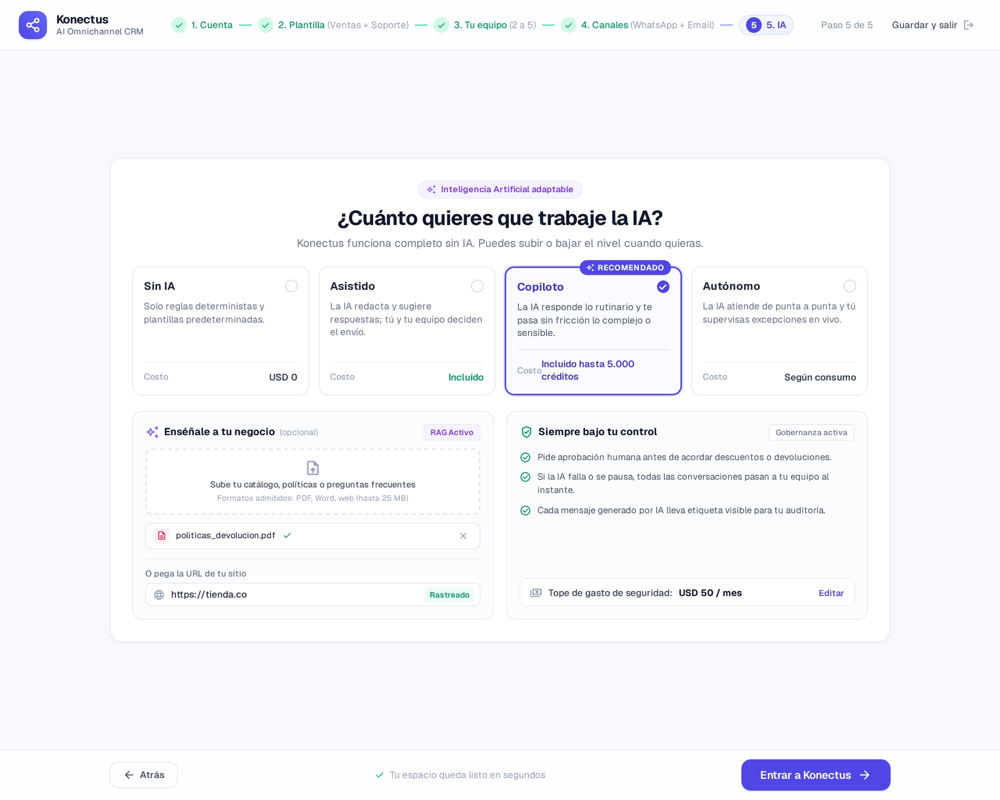
Operación diaria, nichos y configuración


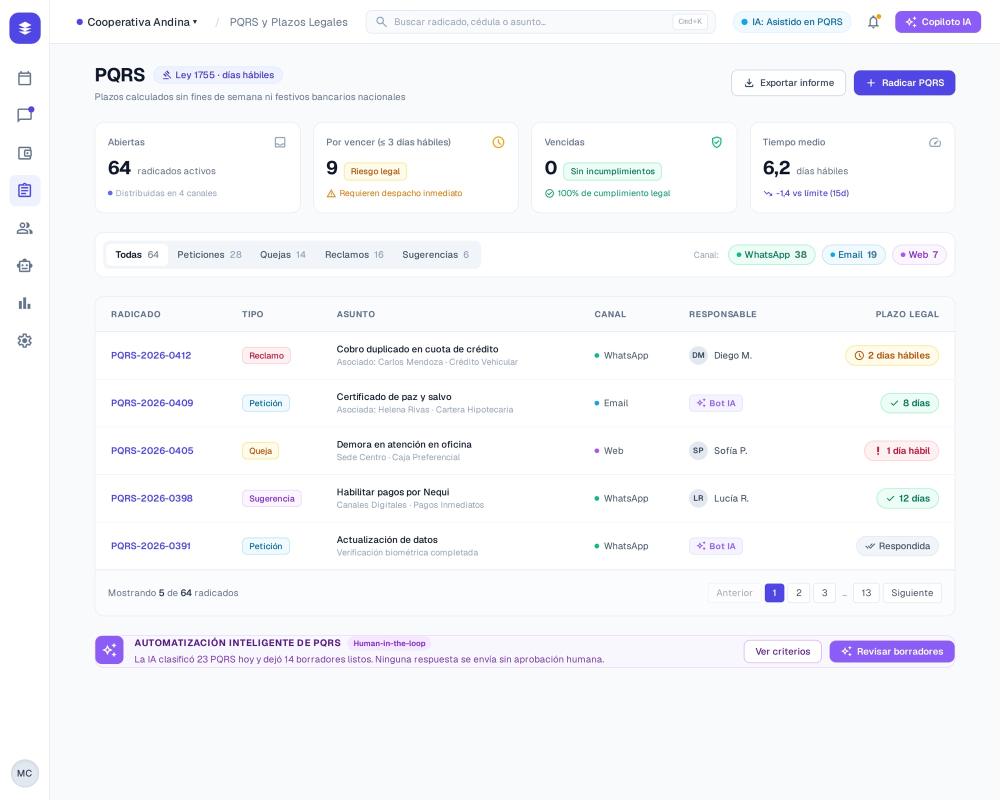
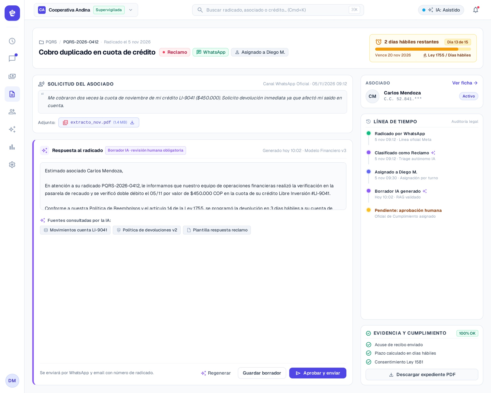

Control, móvil y volver a entrar


Pantallas con el menú anterior, disponibles en el proyecto de diseño: 4.3 Tickets, 4.4 Contactos, 4.5 Ficha 360, 4.6 Analítica, 6.1 Agentes IA, 6.2 Aprobaciones, 6.3 Constructor de flujos y 7.6 Soporte.
Orden oficial con IDs del proyecto de diseño
| # | Pantalla | ID |
|---|---|---|
| 1.1 | Precios | ae59ef2195c84b1592c47d2ed1cba20e |
| 1.2 | Registro | 0e254725f2af49418a32ce00ad5827ba |
| 2.2 | Plantilla | bca6da7e15ac49cf91faebb6a2d03377 |
| 2.3 | Tu equipo | 74f101cef35149588cddc3af4c5e16a7 |
| 2.4 | Canales | d021a5e6bda7401281ad5eb3487054d4 |
| 2.5 | IA | 75c5c2c682bd48069ba5968579569ef4 |
| 2.6 | Configurar conversando | 3c1b61fc246a4f44b2e52d522662bae9 |
| 3.1 | Mi día pyme | 7299cc1039d1498c93771eb194ce2ee1 |
| 3.2 | Mi día con IA | 3487279e5ead4555baf395ae096b5954 |
| 3.3 | Mi día sin IA | 00775bf4dcfa4b12bea1bcf96b5e83a1 |
| 3.4 | Cobranza, primer uso | 0537496a555f469380cb07b6f3c18abd |
| 4.1 | Bandeja | 74104e062a804632a085f47189ee376d |
| 4.2 | Embudo | 97e9eb776a864d128f2eafb58d95bb76 |
| 4.3 | Tickets (menú anterior) | fc924148e6ed419d9f638e22e5a5d4d0 |
| 4.4 | Contactos (menú anterior) | 2b58a678a65847b28df613cb3e3d7a44 |
| 4.5 | Ficha 360 (menú anterior) | b0abd15f32aa489da34f6d26146ad52b |
| # | Pantalla | ID |
|---|---|---|
| 4.6 | Analítica (menú anterior) | 52cd974a1562430ea8303c904be47174 |
| 5.1 | Importar cartera | ef78354cc7ab4cafbb291c92ee75b54d |
| 5.2 | Panel de cobranza | 8c6dbc270306468e9c8e14907c29eeae |
| 5.3 | Quejas, lista | f73c513176ec42a3b9522e41da630bdf |
| 5.4 | Quejas, detalle | bb0b82dc58154dc19d80a9548beccddd |
| 6.1 | Agentes IA (menú anterior) | e98f1d3cd21c4c5ca7a13ad877a02a82 |
| 6.2 | Aprobaciones (menú anterior) | 58e99eb3631840a2815edfc55e77f5be |
| 6.3 | Constructor (menú anterior) | b6fa5724fe00460ea55ed24ace094372 |
| 7.1 | Configuración | 99cd2c15dc6c4d85b798c904276d11f9 |
| 7.2 | Equipo y departamentos | 9d80e537835c45f9a5b228dc6cc75988 |
| 7.3 | Módulos | 6f48cd751a914e67965f78c0f256b3ae |
| 7.4 | Inteligencia artificial | 89a09a5e139f48d9af54b8d8fb82d4e5 |
| 7.5 | Facturación | f9ea1c8d303142dd8f7ccfe393b4114a |
| 7.6 | Soporte (menú anterior) | 23a18ced7c22410a97fa04df4c611e5e |
| 8.1 | Mi día móvil | 496e68a19cc64d60a7621159d5728080 |
| 8.2 | Bandeja móvil | a06c96fb71fb4034b8c79808df58b75e |
| 9.1 | Iniciar sesión | a9c8d76fac0e443cb4162baa28e834cf |